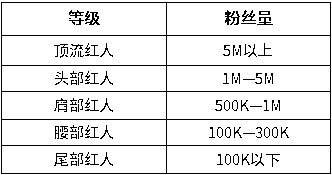
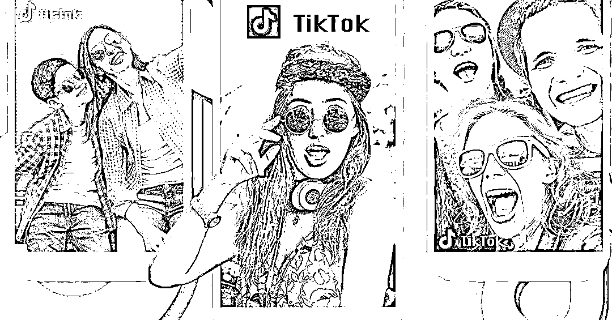
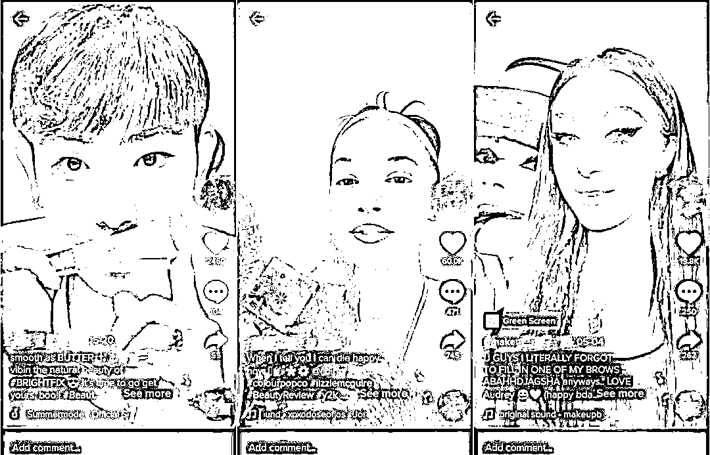

来源：https://opdmf8eocv.feishu.cn/docx/QrpRdlghnoeDO3xCnDrcbpGfnkc
随着社交媒体的蓬勃发展，TikTok作为当下海外最热门的社交媒体之一，以其独特的内容创作和全球性的影响力在全球范围内迅速崛起。这个平台不仅让用户能够轻松分享自己的创意，还为全球的内容创作者提供了一个独特的舞台，使他们能够跨足不同国家和文化，与来自世界各地的观众互动。
海外红人通过创新的短视频内容，成功地吸引了数以百万计的粉丝。TikTok 上的热门视频也在不断地影响用户的购买决策。红人营销凭借强互动性、低推广成本等特点备受品牌们的关注。优质的达人不但能为独立站带来了精准的流量，还能对品牌形成有利的信任背书。
那么，TikTok海外红人到底有多大的机会呢？
红人营销是一种融合了传统和现代营销手段的策略，其核心在于借助红人的个人魅力和影响力，将其嵌入现代内容驱动型营销活动中。与传统广告相比，红人营销更加注重与红人的深度合作，使品牌与目标受众建立更为亲密的连接。
在TikTok平台上考虑红人营销时，需充分了解该平台的独特特点。TikTok的受众年轻化，具有对新鲜事物高度的接受度，因此针对社群和小众亚文化的营销策略更容易精准触及目标受众。平台强调娱乐性和互动性，为品牌提供了建立更紧密、持续联系的机会。由于视频时长短，创意在前三秒内就要引起用户关注，这对于红人营销的执行至关重要。
考虑到这些特点，一些品类更适合在TikTok上进行红人营销。零售、美妆以及服务业务产品因其娱乐性、短视频时长的特点而显得更具吸引力。特别是零售类产品，由于客单价较低、功能简单，更容易在TikTok平台上赢得用户的喜爱。在东南亚的TikTok直播带货中，小家电和美妆时尚产品尤其备受用户青睐，充分体现了这一平台的市场特点。通过精准定位产品特性，与适合的红人展开合作，品牌可以在TikTok上实现更有效的红人营销策略。
当一个品牌进入新的市场时，当地消费者难以无条件选择信任和选购。国际大品牌可通过签约当地明星进行品宣，降低用户的疑问和顾虑，最终实现销售提升。
现在，品牌商能够以一个相对可控的预算邀请不同的红人进行品牌宣传，通过真实的短视频内容降低粉丝用户的防御心理，提升品牌在当地市场的知名度和亲和度。
在TikTok平台上，搜索流量的占比不断扩大，用户更加主动地通过关键字和标签获取信息。与电商时代图文信息为主不同，现在在TikTok，品牌商需要通过自己的团队或红人创作大量视频内容，以截取用户的搜索流量，使品牌和产品在特定hashtag话题搜索首页中展现。
红人推广成为提升品牌知名度的有效途径，尤其在TikTok这个全球月活用户超过16亿的新平台上。
本地红人深刻了解自己国家的文化，通过创作内容共鸣粉丝。描述日常生活场景的痛点，激发购物欲望。合作初期，品牌商可以选择更擅长带货的红人，实现更高的销售转化效果。
成功的红人营销不是硬性灌输，而是在精准触达消费者需求和心理共鸣点上下功夫，通过互动深化粉丝对品牌的情感认同，建立品牌忠诚度。
红人营销最突出的作用就是“互动”，本地红人更了解自己国家和地区的文化，通过分享生活日常、展现产品亮点，抓住用户痛点，激发粉丝的购物欲望，从而加深对品牌的情感认同，形成品牌忠诚度。
除了品牌宣传，产品测评是让客户了解并喜欢新产品的重要方式。红人通过拆箱、产品展示、点评测试，为品牌与消费者之间的沟通提供媒介。在与粉丝互动中，红人了解消费者的需求和痛点，为品牌提供关键信息，帮助品牌更好地推广和改进产品。
在进行海外红人营销时，首要任务是明确目标受众。通过精准的目标人群定位，能更容易找到与之匹配的红人，以达到更好的营销效果。进行数据分析是其中的一种方法，了解购买产品的人群特征，例如是学生族剁手党、白领阶层，还是小资文艺小清新。即便是日常用品的广告主，也会区分市场，专注于不同的细分领域，以便更有针对性地进行营销。
目标明确是制定有效策略的关键。在海外红人营销中，目标可以是增加网站访问量、提高特定产品销售额的百分比等。设定明确的目标有助于衡量营销活动的成功与否，同时为计算营销ROI提供依据。
海外红人营销的核心目的是扩大与产品或服务相关内容的覆盖面，即扩大受众群体，挖掘潜在受众。一旦目标受众明确，就需要根据他们的偏好和习惯确定哪些红人对他们有真正的影响力，从而选择最合适的红人进行合作。这确保了红人与目标受众之间的共鸣，提高营销效果。
当目标受众明确之后，就要根据目标受众，确定谁才是真正对他们产生影响的人，来选择合适的红人。
选择红人的时候需要考虑以下几点：
更新：这个红人最近发布了什么内容？他们多久发一次帖子或者视频？
流量：这个红人有多少浏览量，点赞量如何？
圈子：谁是我们产品圈子里口碑较好的红人？谁经常创作跟我们产品类型相关的内容？
内容：红人内容的质量怎么样，可以用来做二次宣传吗？
一次海外红人营销一般需要一个月的时间，寻找红人、联系红人、敲定合作方式签订合同、寄品、红人脚本确定、红人视频制作确定、最终上线视频。
整个工作过程是一场拉锯战，每一个节点都要时间，最好能做出时间排期，督促团队和红人按时间计划行动。
时间节点规划
如果是与多位红人合作，最好能在同一时间段上线这些视频，形成品牌宣传的声势。这有助于在市场中制造品牌的讨论热潮，增强品牌的影响效果。
通常我们在找红人的过程容易走入一个误区，喜欢根据红人粉丝数量去判断是否有合作的可能。
建议大家寻找的红人最好是与你的产品有一定的关联的，这样宣传和推广的效果会比较好。
那么究竟该如何判断红人的质量呢？
粉丝数量是一个重要指标，但不应仅以此为判断标准。商家可以根据商品和品牌需求，寻找适合不同粉丝量级的红人。大品牌可以考虑500K以上的红人，预算有限可以考虑300K以下的腰尾部红人。

商家可以根据商品和品牌需要，寻找不同粉丝量级的红人。
建议大品牌考虑粉丝数在500K以上的红人，如果是为了提升销量，预算有限可以考虑300K以下腰尾部红人。
视频内容是判断红人是否匹配产品和品牌调性的重要方式，这个得花点时间去观察红人过去评测的产品，与哪些竞争对手品牌合作过，频道主题是否一致。判断是否做过相关或相似产品。有的红人可能不止带货一家品牌，寻找垂直领域的红人，其粉丝画像更为精准。
除了考虑粉丝量，粉丝画像也是一个重要的筛选指标，包括性别、年龄、国家、所用设备等。从受众分布来看，TikTok月度活跃用户年龄主要集中在16至24岁之间，Z世代成为TikTok最大客户群体，而女性用户是电商购物的主要买家。
红人说的话是否真实、权威，能直接影响粉丝的购买决定。这个怎么看？
综合考虑以上因素，可以更全面地评估红人的质量，确保合作的红人与品牌有关联，对粉丝具有影响力，从而提高营销的效果。
1、口播讲解
口播种草就是红人在自己的直播或是视频过程中，以插入口播的形式，描述对应产品的功能以及推荐的理由，主要是基于产品的外观、特点或者功能属性展开讲解。红人在视频中，向观众展示产品的使用方法，从而吸引用户产生购买兴趣。
2、开箱展示
开箱视频在TikTok上备受用户们的欢迎，无论是服装、玩具、彩妆、3C产品等等领域，都可以采用开箱展示的模式。该模式一般是免费寄给红人一些样品，并与红人进行沟通，阐述品牌特色，尤其是需着重突出产品的某些特点。之后在红人创作开箱作品的时候向粉丝宣传品牌，单纯的介绍产品是其一，突出品牌才是重点。
3、教学植入
很多红人都有自己擅长的领域。通过才艺展示（例如美妆博主人物仿妆）、视频教学(例如服装博主教穿搭)、干货分享（例如美食博主分享烘培过程）等，将产品植入视频，给观众留下印象，潜移默化为品牌树立影响力。
4、情景剧
很多红人会用剧情展示产品特性，链接用户的生活。情景剧情的视频是否能够引发观众的共鸣是关键，一个优秀的情景剧情能让观众流连忘返，且剧情里面要加入广告产品的信息元素，要以自然的方式触达观众内心，增强用户兴趣，成功的情景剧情会有意想不到的曝光度和宣传度，剧情的内容能充分宣传品牌理念与文化
5、生活Vlog
Vlog是这几年非常火热的视频形式，红人们逐渐通过记录自己的日常生活片段来分享有趣的事情和爱用物品。与红人进行Vlog形式的合作，能很亲切又自然地植入品牌产品，并且红人在视频中也可以展示产品和使用效果，非常具备种草能力！
6）专业测评
专业测评模式应尽量选择长期深耕某一个领域的红人达人，并不是粉丝越多越好，垂直内容才是最重要的。评测类的作品更容易接触到精准的消费者，通过测评博主的宣传讲解，能让产品有说服力，也能让品牌获得更多的流量和转化机会。
7、才艺展示
在TikTok这个年轻群体占比大的短视频平台中，舞蹈、健身等才艺的红人得到很多用户的追捧，吸引了很多粉丝的关注。这类的红人粉丝粘性往往很高，红人的对他们的影响更大。与这类红人达人合作，在他们的视频中推广你的产品，更容易到粉丝的喜爱，有偶像效应的加分扶持
8、资讯科普
这类频道比较适合科技类、时尚类品牌，通常是合作一些专业领域研究较深的博主，他们在分享资讯信息或者科普知识的作品当中，可以适当的植入相应产品的信息，也为品牌的文化理念有一个宣传的作用。
9、红人直播带货
相比较于短视频的内容营销来说，红人直播带货互动性更佳，刺激用户消费的目的性更强，还可以更好测试出卖家的需求性！
10、标签挑战赛&红人合作
在 TikTok 上，80% 用户都喜欢参与挑战赛！它具有内容难度低、复制性强、音乐魔性、传播率高，非常容易引起潮流！主流玩法是，品牌商家选择与品牌调性相关的 红人 作为首位挑战者，再结合腰尾部 红人 发酵活动，通过红人的影响力吸引更多的用户参与挑战。
11、广告投放&红人合作
在 TikTok 上不仅可以借助红人来获取流量，还可以通过付费流量一起推广。目前最常见的合作方式是与 红人 相结合的 In-feed 信息流广告，用户在滑动 Foryou 视频中时就会显现，这么做的好处是有大曝光，还有引流转化等有效收益。
选择合适的合作方式，结合产品特性和目标受众，可以更好地在TikTok平台上进行红人营销。
费用是红人营销中一个重要的考虑因素，不同的合作方式和红人因素都会影响最终的费用。以下是一些常见的费用结构：
1、红人分佣
红人直接传播产品销售信息，消费者下单后红人可针对收益进行抽成。类似的还有赞助、红人联名等等方式，这些对独立站卖家的实力有一定的要求，大家可以根据自己的需求适当的去选择。
无论选择什么样的合作方式，都需要明确合作内容、价格、包含的服务、视频的版权，以及预期的效果，形成书面的协议。
与红人商讨的内容很重要，一定要让广告和红人的风格统一，尤其是种草视频和标签挑战类视频，需要看起来没有很生硬的推销感。
2、直接付费的内容曝光合作
这种方式是最常见的一种合作模式，就是红人明码标价多长时间多少钱，这样视频里什么时间自家产品出个境多久等等，做个展示，至于帖子能存在多久，也是需要和红人去沟通商量。
3、免费赠送
免费赠送产品给符合目标受众的红人，红人发布开箱视频或是体验视频评价产品。这类合作基本也不指望红人有什么多大得销售量。主要就是让红人帮你做个小曝光，然后自己对红人得素材进行收集，可能后面用的上。当然浙西版权问题也是需要提前和红人沟通好的。
需要注意的是，TikTok红人最终的推广费用涉及很多因素，包括：
在合作前，商家和红人需要充分沟通，明确合作内容、价格、服务包含、视频版权等细节，并形成书面协议。确保广告内容与红人风格一致，尽量避免生硬的推销感。最终的费用应该是根据具体合作条件和效果来协商确定的。
1、一般给红人发信件的时候要用企业邮箱或者Gmail
像 QQ、163 这些国内邮箱在国外可能会被屏蔽掉，建议大家不要使用国内邮箱。
2、写信时，信中最好不要出现 “price、discount或review”等类似的敏感词
最好找同义词替换掉，还有一些图片和网址链接也最好不要出现。等到写第二封信的时候就可以适当的使用这些词汇或者图片和图片链接。
3、挑选合适的红人写开发信
为了提高红人回复率，我们应该选择合适的红人写开发信。一般情况下，我们根据红人的粉丝量将他们分为大 V、中 V，小 V 或者小小 V（超过一百万粉丝的为大 V，十万到一百万之间的为中 V，一万到十万的为小 V，一万以下的为小小 V）。
粉丝数量越少的红人，回复率越高。
如果想要在特定的国家进行推广，或是想要直接推固定的产品。我们建议在选红人之前，可以先在TikTok上搜索产品关键词或者是某个国家。
比如有些人想要东南亚地区的红人资源，通过在TikTok上查找可发现，这些地区红人的粉丝较少，知名度也不是很高，所以相对来说是比较廉价的，甚至很多都不要你的钱。你可以免费送一些产品给他们（最好一次性送多点），他们就会乐意帮你做推广。虽说这种小V的推广效果比不上大 V，但至少他愿意接你的单。
1、好的标题
简短表明邮件来意。例如：To John Smith, Tiktok collaboration
可以加上review，free testing，unboxing，cooperation，collaboration等字眼，或者预算金额范围。
注意不要出现敏感词，例如“商务合作、产品推广”等词要谨慎使用，避免邮件被屏蔽掉。
2、称呼和问候语
提及红人的名字时可以使用敬语，避免随意性口语。
例如：Hey Mr Smith, I'm glad to have an email with you!
3、邮件正文
(1)自我介绍：简单说明姓名、地址，然后把自己产品的品牌名称写上去，并附上产品图片和链接，产品描述中要突出我们的亮点和优势，说明产品功能属性，避免国外红人瞎推。
(2)表达观点：卖家对该红人频道的浓厚兴趣，以及对红人视频内容和观众的深刻了解。
(3)开发理由：为什么认为红人适合这个频道的内容和观众需求。
(4)说明价值：卖家要说明能给红人带来什么价值。例如更深程度的用户参与度、免费寄送样品等，有助于建立长期互利的合作关系。
4、感谢语
结尾表达对红人的感谢，并期待对方回信。
5、附件
如果有额外的资料，可以作为附件文件发送，避免使邮件的内容过重。
6、如何和红人进行合作商谈？
一般有两种情况，一是红人会直接问你的预算；二是会给你一张完整的报价表，表上会表明帖子的价格以及发帖时长的说明。
个人建议最好跟第二种合作，因为这种肯定是和很多人合作过，显得更专业，效果也更好。
综合的评估可以帮助商家全面了解红人推广的实际效果，为今后的合作提供经验和优化方向。同时，及时的反馈和沟通也是优化合作关系的重要步骤。
红人营销一向是个“苦差事”，繁琐、复杂、链路长等等。它在国内执行起来，费时又费人；放到国外，加上时差、语言、文化等诸多因素的重重障碍，难度系数就更高了。
整体上看，海外红人营销的产业成熟度远落后于国内，这体现在方方面面。
首先，缺乏官方的撮合平台。相较于国内，各主流红人营销平台在国外并未形成统一的对接体系，例如抖音的巨量星图、小红书的蒲公英、快手的磁力聚星以及B站的花火等。而在海外市场，Facebook和谷歌等平台尚未推出类似的集成平台。当前的搜索标签颗粒度相对较粗，虽然用户能够通过一些关注词和系统分类词找到影片或娱乐内容，但这并不足以让品牌能够有针对性地根据红人的粉丝特性进行精准搜寻。
比如，假设大疆的市场营销人员在 YouTube 上搜索drones，会得到海量的无人机视频，但在其中找到真正具有转化号召力的博主却如大海捞针般困难。在数据模糊的情况下，对于身处中国的卖家而言，很难准确评估海外哪些红人具有最高的价值。
就像之前听到的一句话：“在数据模糊的情况下，一个生活在中国的卖家，很难评估大洋彼岸的哪些红人是最有价值的。这就好像一卖螺蛳粉的西方人，要找一个中国博主拍广告一样难——中间隔着巨大的信息偏差。”
红人营销是一项重沟通的工作，本土卖家想跟外国红人建立联系展开沟通，中间隔着不少“天堑”。
1、通工具的差异。
在国内的职业场景中，我们习惯通过微信、飞书、钉钉交流工作。但在海外，大部分的商业沟通是通过邮件完成的，后者在中国没那么普遍。
2、语言障碍
要充分考虑红人视角。有一定量粉丝的海外红人，每天会收到许多品牌的合作邀约，几十到几百封不等，塞满了邮箱，他可能只会花几秒看一个邮件。品牌要足够吸引眼球且具有吸引力，才能从中脱颖而出，被红人打开、选中。
绝大多数出海卖家都不是native speaker，要用当地语言写出这样的邮件就会面临高门槛，需要雇佣外籍员工或者外文水平较高的中国员工来专门负责，或者尝试ChatGPT等工具。
建立联系后，品牌与海外红人的合作就一片光明了嘛？也不是，这其中最令人挠头的是红人的职业化程度普遍较低。
“他们常常收到货品之后就玩‘消失’，不回复品牌消息。”这和国内博主面对商单时兢兢业业、24小时全天候在线回复金主大相径庭。
根源在于东西方博主的出发点不同。这些年随着社交媒体的高速发展，以及红人造梦神话的推动，红人在国内俨然变成一份正儿八经的职业，对商业化、品牌合作等事项统统谙熟于心，且拿出对待工作的态度严阵以待。
西方博主则不同。他们中的很多人之所以做内容，起因并不是想赚钱，而是源于对某个垂直领域的热爱，希望分享给志同道合的人。所以，“红人”不是他们的职业生涯，只是业余的兴趣爱好。
这是第四个问题——跟有求必应的国内红人相比，品牌经常会觉得海外红人“不听话”。
“甲方虐我千万遍，我待甲方如初恋。”在国内市场，红人对于品牌提出的1、2、3点需求，基本都会尽力配合。比如“视频要突出产品的5大卖点、6大优势、7大升级，还有8个禁忌词汇不能说”。
但海外红人普遍注重创作自由，不一定乐意。他们更希望说出对产品的真实想法，即使面对的是出钱的甲方。
像那种通篇都是‘这是我用过最好的产品，我很爱它’等明显的广告痕迹的内容，效果往往不如人意。假设有人因为这条视频购买了这个产品，随后发现产品存在质量问题，他们可能会去博主的评论区吐槽或者咒骂，很容易造成反噬。所以，如果卖家想充分释放海外红人的能量，需要给他更多的空间和自由。
海外红人合作虽然有诸多机遇，但其中最突出的挑战之一是合作成本。在这个方面，我们需要考虑以下几个关键因素：
红人营销在海外市场确实面临更多的挑战，但通过合理规划、有效沟通以及与红人建立互信关系，这些难点都是可以克服的。建立长期合作关系，对品牌与红人之间的合作更有利。
这个严格来说是TikTok账号的赚钱方式。创作者基金的收益因用户而异，它是基于受众规模、用户参与度质量和发帖频率等因素进行计算的。
我们可以提高TikTok账号视频的播放量，从而获得TikTok官方提供的资金。（确实也有一些新的TikTok账号，仅仅依靠搬运国内的视频素材，就轻松获得了数百万的播放量）。
要加入TikTok 创作者基金，你需要满足以下条件:
1.你必须至少年满18岁。
2.你必须至少拥有 1 万名粉丝。
3.你的视频在过去 30天 内必须有 10 万播放量。
4.你的账户必须遵守 TikTok 社群自律公约及使用条款。
而TikTok的创作者基金，是按照播放量发放的，所以只能被当成一个短期赚钱的变现方式，想要在TikTok上更好地赚钱，必须找到更长久的变现模式。这样才能规模化、批量化、稳定化操作。
如果你做过跨境电商，可以引流到自己的亚马逊店铺、速卖通店铺、独立站等，通过让TikTok用户购买自己的商品，来增加收入。
如果你没有做过跨境电商，也可以马上开设一个店铺；或者给别人的店铺引流，赚取相应的广告费或佣金。
可以将自己做好的TikTok账号，出售给那些需要的人。

学会如何从0到1做好TikTok后，可以去国内的跨境电商企业、品牌公司等，面试相应的岗位。
如果你的才艺很好，通过TikTok用户的打赏来赚钱，也是可以的。而且TikTok直播带货，未来也一定是大势所趋，现在TikTok小黄车（购物车）功能也开始陆续开放，后续完全可以在TikTok上开店，直接开通购物功能。不必再跳转到其它购物平台，TikTok用户可以直接通过短视频、直播、商品橱窗等入口，打开我们的商品链接。

总的来说，TikTok海外红人既有巨大的市场机遇，又需要在合作中面对并克服各种挑战。通过科学的战略规划、细致的合作策略，还是可以获得可观的回报的。